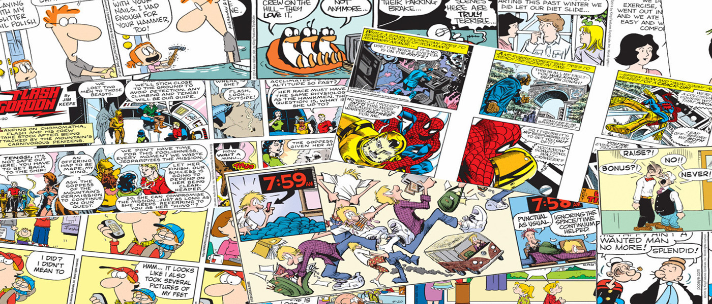

Mapas conceptuales y mentales
- Mindomo es un generador muy versátil con el que es posible desarrollar una gran variedad de tipos de mapas conceptuales. Para poder guardar los resultados en el ordenador hay que registrarse.
- Mindmeister es una herramienta que permite trabajar colaborativamente en la creación y desarrollo de mapas mentales en tiempo real pero además tiene la opción de importar mapas de Freemind, MindManager o en formato PDF. La modalidad “Basic” es gratuita y requiere registrarse.
- Bubbl.us y Coggle son aplicaciones online con la que se pueden crear mapas mentales de forma gratuita para después imprimirlos o insertarlos en una web.
Cómics y dibujos animados

- Stripgenerator es un servicio web que cuenta con un generador de tiras cómicas muy fácil de usar.
- Comix. Generador de historietas en línea para expresar tus ideas en forma de comic.
- Witty Comics. Generador de cómics que permite guardar el resultado en un servidor o en el propio ordenador en formato PNG. Requiere registrarse.
- Bitmoji. Generador de Emojic muy completo. Permite personalizar expresiones, añadir efectos y crear personajes propios, El resultado se puede enviar por email o publicarse en una web. Requiere registrarse.
- Pixton es otro generador de tiras cómicas muy completo y versátil. Permite personalizar los fondos y los personajes, añadirles expresiones y posturas, y acercar o alejar los elementos que conforman cada escena. El resultado se puede enviar por correo o insertarse en una web. Requiere registrarse.
- Vyond es una herramienta que permite la creación dibujos animados donde puede elegir los escenarios y los personajes, utilizar imágenes propias o añadir sonidos y bocadillos de texto.